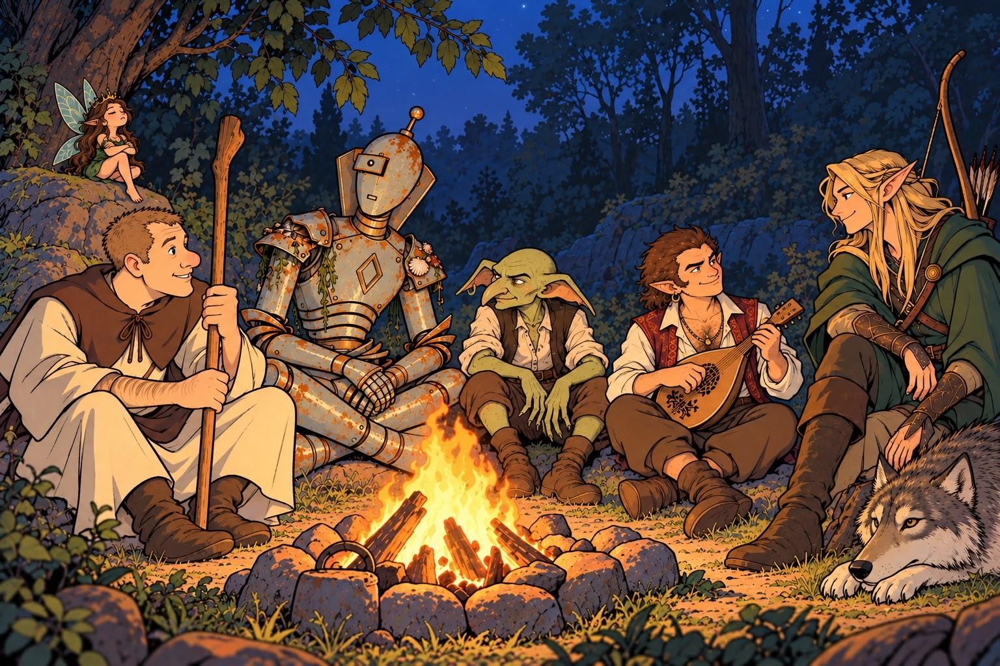

Les héros de la Bastide
Retrouvez les fiches interactives COF2, l’équipement actif et les informations propres à chaque aventurier.
Voir les personnagesFiches, capacités, inventaires et objets reçus›Le quartier général de la table de la Bastide : les héros, leurs chroniques, leurs découvertes et les outils de campagne réunis au même endroit.

Retrouvez les fiches interactives COF2, l’équipement actif et les informations propres à chaque aventurier.
Voir les personnagesFiches, capacités, inventaires et objets reçus›Cartes, journal, rencontres et outils narratifs restent séparés des règles et des personnages.